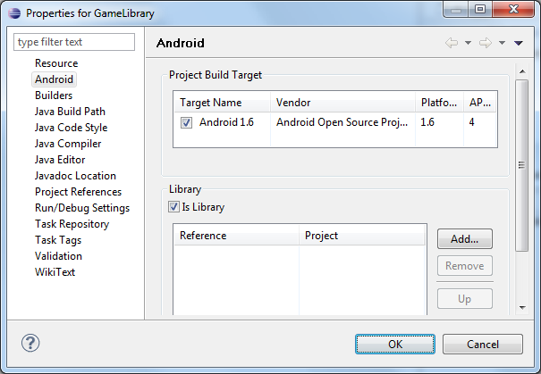
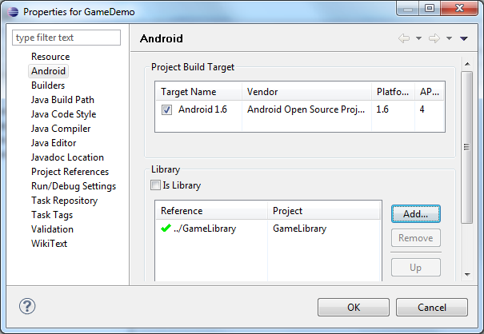

In this document
See also
Eclipse and the ADT plugin provide GUIs and wizards to create all three types of projects (Android project, Library project, and Test project):
- An Android project contains all of the files and resources that are needed to build a project into an .apk file for installation. You need to create an Android project for any application that you want to eventually install on a device.
- You can also designate an Android project as a library project, which allows it to be shared with other projects that depend on it. Once an Android project is designated as a library project, it cannot be installed onto a device.
- Test projects extend JUnit test functionality to include Android specific functionality. For more information on creating a test project, see Testing from Eclipse with ADT.
Creating an Android Project
The ADT plugin provides a New Project Wizard that you can use to quickly create a new Android project (or a project from existing code). To create a new project:
- Select File > New > Project.
- Select Android > Android Application Project, and click Next.
- Enter the basic settings for the project:
- Enter an Application Name. This name is used as the title of your application launcher icon when it is installed on a device.
- Enter a Project Name. This text is used as the name of the folder where your project is created.
- Enter a Package Name. This class package namespace creates the initial
package structure for your applications code files and is added as the
packageattribute in your application's Android manifest file. This manifest value serves as the unique identifier for your application app when you distribute it to users. The package name must follow the same rules as packages in the Java programming language. - Select a Minimum Required SDK. This setting indicates the lowest
version of the Android platform that your application supports. This value sets the
minSdkVersionattribute in the <uses-sdk> element of your manifest file. - Select a Target SDK. This setting indicates the highest version of
Android with which you have tested with your application and sets the
targetSdkVersionattribute in your application's' manifest file.Note: You can change the target SDK for your project at any time: Right-click the project in the Package Explorer, select Properties, select Android and then check the desired Project Build Target.
- Select a Compile With API version. This setting specifies what version of the SDK to compile your project against. We strongly recommend using the most recent version of the API.
- Select a Theme. This setting specifies which standard Android visual style is applied to your application.
- Click Next.
- In the Configure Project page, select the desired settings and click Next. Leave the Create activity option checked so you can start your application with some essential components.
- In the Configure Launcher Icon page, create an icon and click Next.
- In the Create Activity page, select activity template and click Next. For more information about Android code templates, see Using Code Templates.
- Click Finish and the wizard creates a new project according to the options you have chosen.
Tip: You can also start the New Project Wizard by clicking the
New  icon in the toolbar.
icon in the toolbar.
Setting up a Library Project
A library project is a standard Android project, so you can create a new one in the same way as you would a new application project.
To create a new library project:
- Select File > New > Project.
- Select Android > Android Application Project, and click Next.
- Enter the basic settings for the project, including Application Name, Project Name, Package Name, and SDK settings.
- In the Configure Project page, select the Mark this project as a library option to flag the project as a library.
- Set the other options as desired and click Next.
- Follow the instructions to complete the wizard and create a new library project.
You can also convert an existing application project into a library. To do so, simply open the Properties for the project and select the is Library checkbox, as shown in the figure below.
Figure 1. Marking a project as an Android library.
To set the a project's properties to indicate that it is a library project:
- In the Package Explorer, right-click the library project and select Properties.
- In the Properties window, select the Android properties group in the left pane and locate the Library properties in the right pane.
- Select the is Library check box and click Apply.
- Click OK to close the Properties window.
Once you create a library project or mark an existing project as a library, you can reference the library project in other Android application projects. For more information, see the Referencing a library project section.
Creating the manifest file
A library project's manifest file must declare all of the shared components that it includes, just as would a standard Android application. For more information, see the documentation for AndroidManifest.xml.
For example, the TicTacToeLib example library
project declares the activity GameActivity:
<manifest>
...
<application>
...
<activity android:name="GameActivity" />
...
</application>
</manifest>
Referencing a library project
If you are developing an application and want to include the shared code or resources from a library project, you can do so easily by adding a reference to the library project in the application project's Properties.
To add a reference to a library project, follow these steps:
- Make sure that both the project library and the application project that depends on it are in your workspace. If one of the projects is missing, import it into your workspace.
- In the Package Explorer, right-click the dependent project and select Properties.
- In the Properties window, select the "Android" properties group at left and locate the Library properties at right.
- Click Add to open the Project Selection dialog.
- From the list of available library projects, select a project and click OK.
- When the dialog closes, click Apply in the Properties window.
- Click OK to close the Properties window.
As soon as the Properties dialog closes, Eclipse rebuilds the project, including the contents of the library project.
Figure 2 shows the Properties dialog that lets you add library references and move them up and down in priority.
Figure 2. Adding a reference to a library project in the properties of an application project.
If you are adding references to multiple libraries, note that you can set their relative priority (and merge order) by selecting a library and using the Up and Down controls. The tools merge the referenced libraries with your application starting from lowest priority (bottom of the list) to highest (top of the list). If more than one library defines the same resource ID, the tools select the resource from the library with higher priority. The application itself has highest priority and its resources are always used in preference to identical resource IDs defined in libraries.
Declaring library components in the manifest file
In the manifest file of the application project, you must add declarations of all components
that the application will use that are imported from a library project. For example, you must
declare any <activity>, <service>,
<receiver>, <provider>, and so on, as well as
<permission>, <uses-library>, and similar elements.
Declarations should reference the library components by their fully-qualified package names, where appropriate.
For example, the TicTacToeMain example
application declares the library activity GameActivity like this:
<manifest>
...
<application>
...
<activity android:name="com.example.android.tictactoe.library.GameActivity" />
...
</application>
</manifest>
For more information about the manifest file, see the documentation for AndroidManifest.xml.